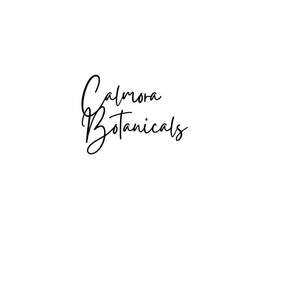

Trade Mark Journal No.2025/048 28 November 2025
UK00004294509 13 November 2025 (3,5,24,34,35)

- Class 3
- Cosmetics; Skincare cosmetics; Moisturisers [cosmetics]; Cosmetics and cosmetic preparations; Hair cosmetics; Skin fresheners [cosmetics]; Cosmetics for eye-lashes; Cosmetics for suntanning; Anti-aging moisturizers used as cosmetics; Organic cosmetics; Lip cosmetics; Nail cosmetics; Non-medicated cosmetics; Skin moisturizers used as cosmetics; Natural cosmetics; Cosmetics preparations; Cosmetics in the form of lotions; Beauty care cosmetics; Facial creams [cosmetics]; Suncare lotions [for cosmetic use]; Eyebrow cosmetics; Tanning preparations [cosmetics]; Multifunctional cosmetics; Milks [cosmetics]; Eye cosmetics; Body creams [cosmetics]; After-sun oils [cosmetics]; Skin masks [cosmetics]; Cosmetics for eye-brows; Skin care cosmetics; Cosmetics for children; Non-medicated cosmetics and toiletry preparations; Humectant preparations [cosmetics]; Emollient preparations [cosmetics]; Cosmetics in the form of creams; Powder compacts [cosmetics]; Cosmetics for use on the skin; Cosmetic moisturisers; Sunscreens [for cosmetic use]; Cosmetic creams and lotions; Bath powder [cosmetics]; Night creams [cosmetics]; Skin recovery creams [cosmetics]; Cosmetics for the use on the hair; Body gels [cosmetics]; Body and facial creams [cosmetics]; Body care cosmetics; Creams (Cosmetic -); Cosmetic soaps; Beauty lotions; Facial lotions [cosmetic]; Tissues impregnated with cosmetics; Anti-ageing creams [for cosmetic use]; Skin cleansers [cosmetic]; Skin cream; Cosmetic creams for the skin; Cosmetics for protecting the skin from sunburn; Anti-wrinkle cream; Shower and bath gel; Bath lotion; Shower soap; Baby bubble bath; Bubble bath.
- Class 5
- Medicinal creams for skin care; Skin care lotions [medicated]; Medicated skin care preparations; Medicinal creams for the protection of the skin; Pharmaceutical preparations for skin care; Medicated skin lotions; Pharmaceutical skin lotions.
- Class 24
- Make-up removal wipes [textile] other than impregnated with cosmetics; Towel sheet; Bath sheets (towels); Bath sheets; Bath wrap towels; Quilts of towel; Towels; Bath towels; Turkish towel; Hand towels; Bathroom towels; Face towels.
- Class 34
- Smokeless cigarette vaporizer pipes; Electronic cigarette atomizers; Electric cigarettes [electronic cigarettes]; Electronic cigarette liquid [e-liquid] comprised of flavorings in liquid form used to refill electronic cigarette cartridges; Electronic cigarette cases; Chemical flavorings in liquid form used to refill electronic cigarette cartridges; Personal vaporisers and electronic cigarettes, and flavourings and solutions therefor; Liquid nicotine solutions for use in electronic cigarettes.
- Class 35
- Marketing research in the fields of cosmetics, perfumery and beauty products; Marketing research; Marketing research and analysis; Marketing research services; Advertising research; Market research for advertising; Business research; Marketing consulting; Investigations of marketing strategy; Business research and surveys; Business research consulting; Marketing consultancy; Planning services for marketing studies; Advertising and marketing consultancy; Design of marketing surveys; Consumer research; Commercial information research studies; Research of business information; Conducting of business research; Marketing information; Market research and business analyses; Preparation of marketing surveys; Business and market research; Development of marketing concepts; Direct marketing consulting; Consultancy services in the field of affiliate marketing; Advice in the field of business management and marketing; Marketing, advertising and promotion services; Online marketing; Internet marketing.
Barzy’s Ltd.